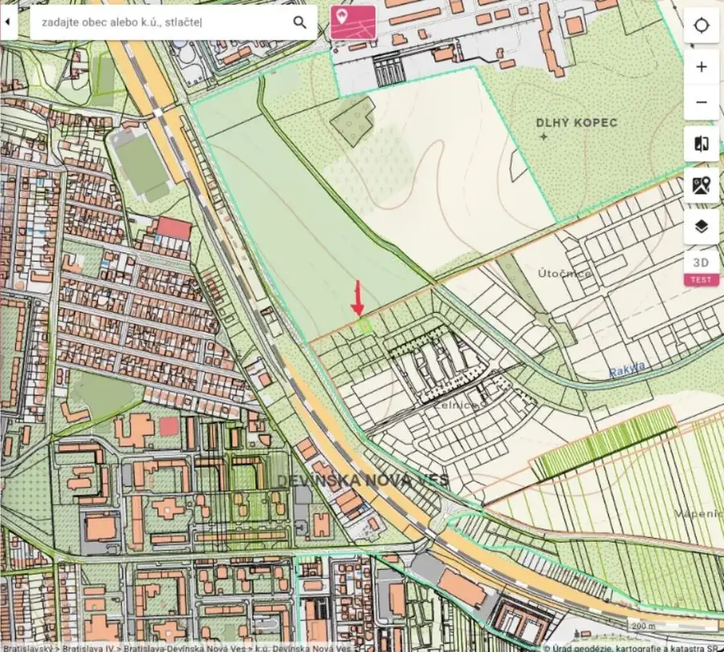
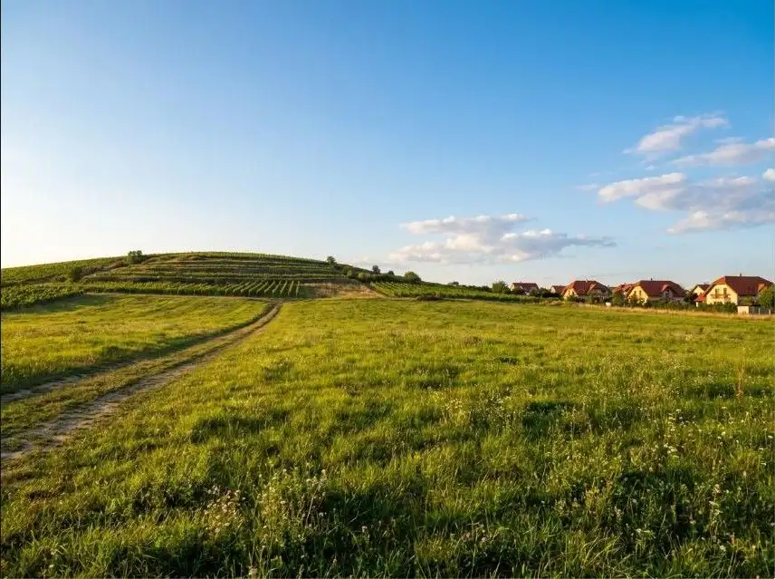
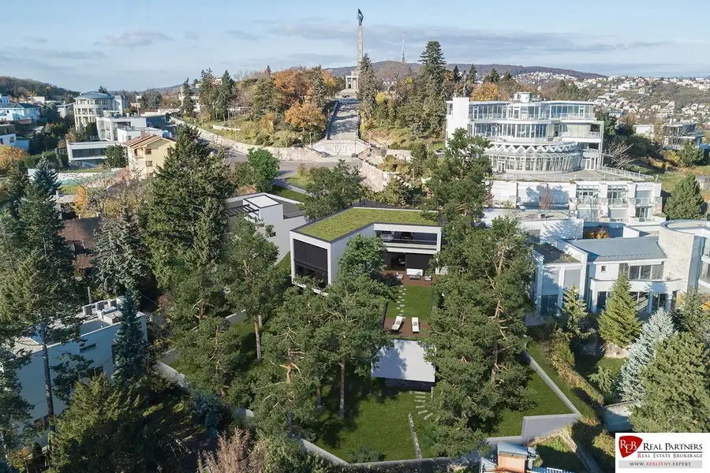
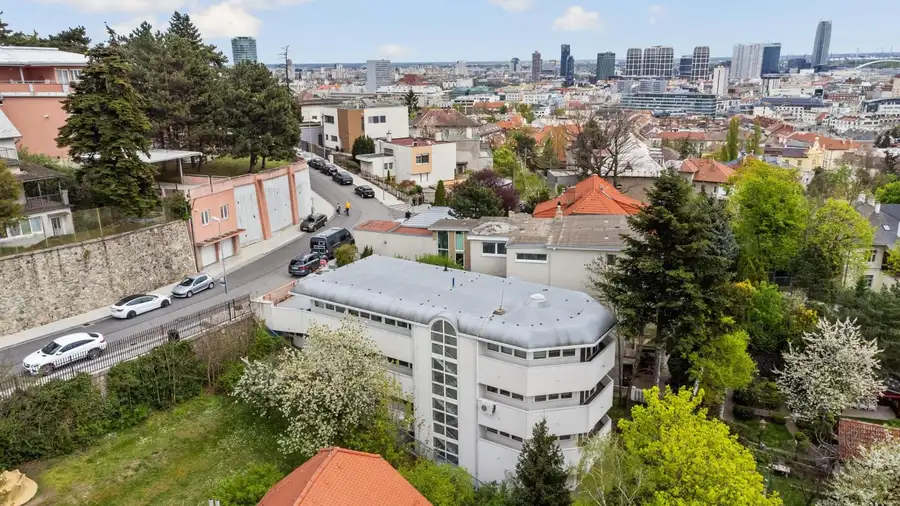
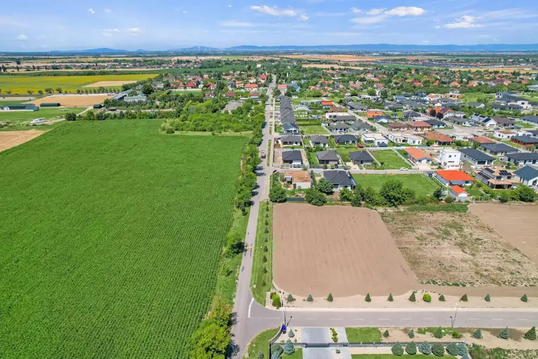

REB.SK PREDAJ – Investičný pozemok 551 m2, lokalita Rakyta, DNV
Devínska Nová Ves, Bratislava


- Plocha551 m²
- VlastníctvoOsobné
O nehnuteľnosti
Vo výhradnom zastúpení majiteľa ponúkame na predaj investičný pozemok s výmerou 551 m2 v žiadanej a dynamicky sa rozvíjajúcej lokalite Rakyta v mestskej časti Bratislava – Devínska Nová Ves.O POZEMKU:- parcela registra C, k. ú. Devínska Nová Ves- výmera 551 m2- pravidelný tvar, rovinatý terén- bez tiarch, vlastnícky podiel 1/1- pozemok sa nachádza mimo zastavaného územia obcePREČO INVESTOVAŤ DO LOKALITY RAKYTA:Rakyta patrí medzi najperspektívnejšie rozvojové územia Devínskej Novej Vsi. Územie sa momentálne intenzívne rozvíja a spracúva v rámci územného plánu a pripravuje sa vybudovanie inžinierskych sietí, na ktorom sa budú podieľať aj majitelia pozemkov. Inžinierske siete zatiaľ nie sú vybudované – práve preto je teraz vhodný čas na kúpu za priaznivú cenu.Lokalita je atraktívna nielen pre budúcu výstavbu rodinných domov, ale aj ako dlhodobá investícia do nehnuteľností: na jednej strane príroda a vinice pod Dlhým kopcom, na druhej strane kompletná občianska vybavenosť Devínskej Novej Vsi, rýchle napojenie na Bory Mall a diaľničný obchvat D4.Foto je ilustračné.Kontaktná osoba: Ing. Martin Ilavský 0903 780 810 alebo píšte na ilavsky@reb.sk© Všetky informácie uvedené v tomto inzeráte sú orientačné a môžu podliehať zmene.© Text a fotografie sú autorským dielom a majetkom realitnej kancelárie REB - REAL PARTNERS.
Parametre
- Druh
- Pozemok pre rodinné domy
- Dátum zverejnenia
- 19. 08. 2026
- Elektrina
- Nedostupné
- Odpadové vody
- Nedostupné
- Plocha pozemku
- 551 m²
- Plyn
- Nedostupné
- Terén pozemku
- Rovinatý
- Typ
- Predaj
- Vlastníctvo
- Osobné
- Voda
- Nedostupné
Kde to je


Mohlo by Vás zaujímať

DomNové Cena na vyžádáníREB.sk Predaj Vila pri Slavíne, 700 m2, Staré mesto, BA I. Staré Mesto, Bratislava 700 m²
DomNové Cena na vyžádáníREB.sk Predaj Budova pri Slavíne, 657 m2, Staré mesto, BA I. Staré Mesto, Bratislava 657 m²
PozemokNové Cena na vyžádáníREB.sk Luxusná veľkometrážna parcela za skvelú cenu , 2.477 m2 Kvetoslavov 2477 m²